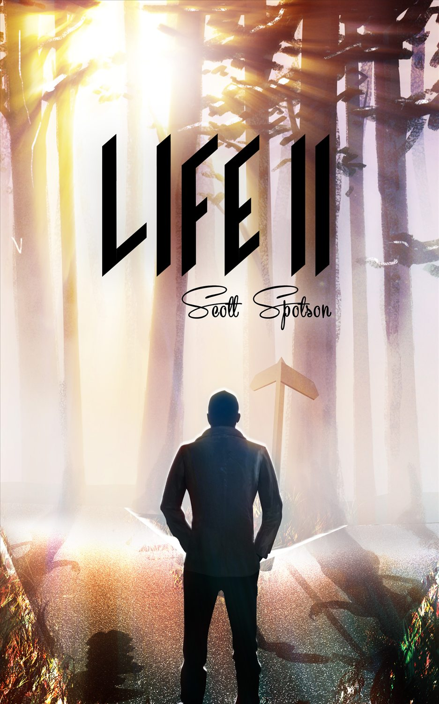
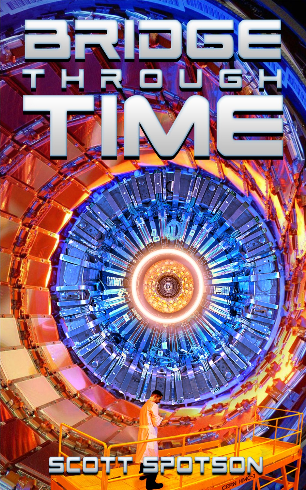
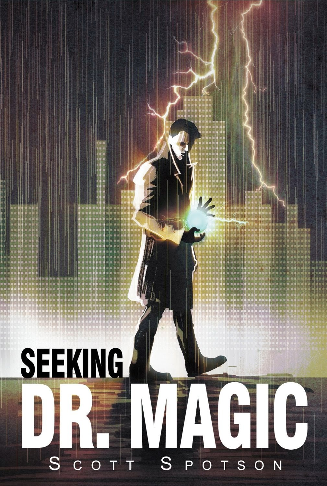
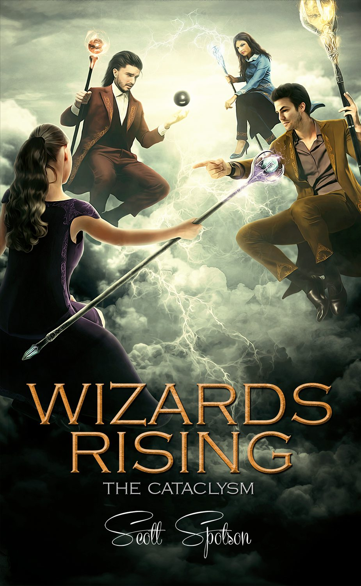

Time travel
Life II
Scott Spotson
Science fiction & fantasy
What if you could
live your life over again?
Time travel. Impossible worlds. The extraordinary hiding inside an ordinary life.
Beyond the everyday

Time travel
Scott Spotson

Time travel
Scott Spotson

Fantasy
Scott Spotson

Fantasy
Scott Spotson
Watch the trailer
Meet Max Thorning and the time-travel story that began it all.
Explore Life II